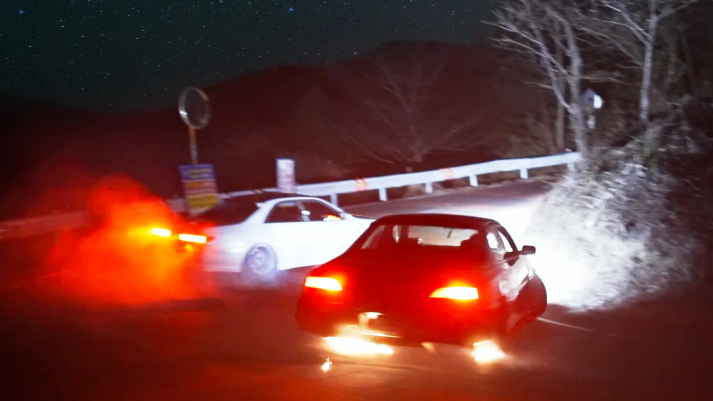
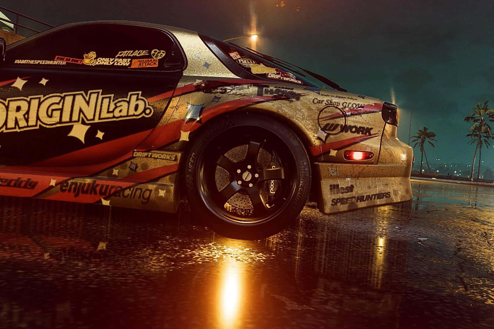
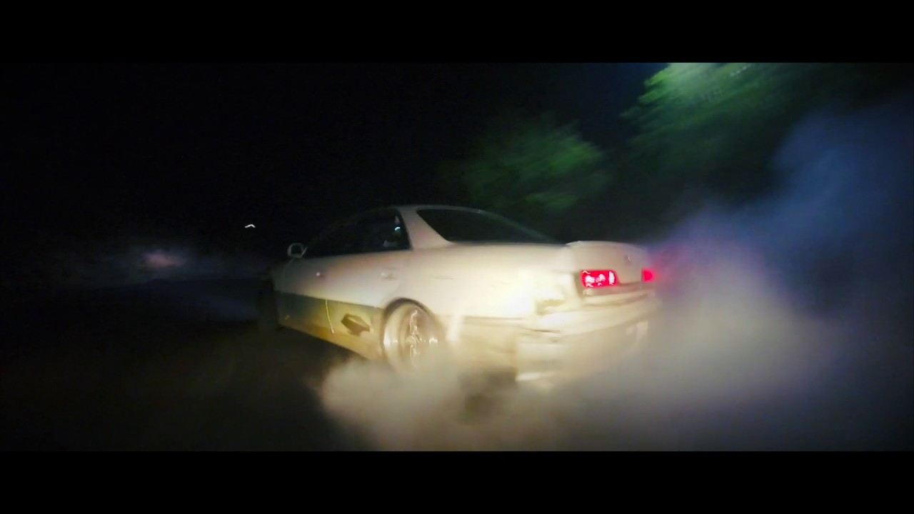
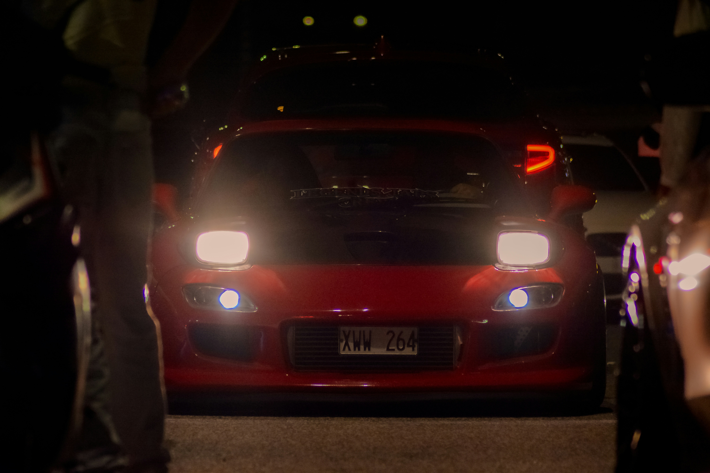

le moteur qui a redéfini la culture de drift au japon




Modèle 3D ICI
Demain,je remplace ce div par :
<model-viewer src="assets/moteur.glb" animation-name="X" camera-controls style="background-color: transparent; --poster-color: transparent;">...</model-viewer>
cliquez ici pour tester le panel